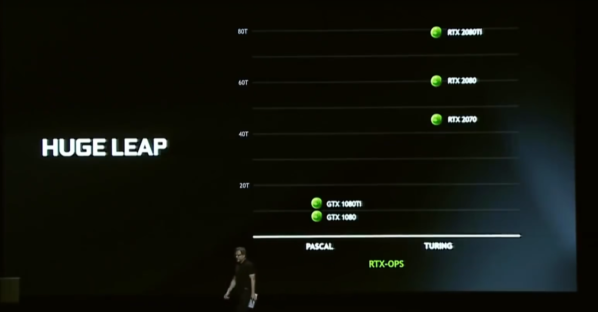

光线追踪专题
从光栅化到光线追踪
上世纪 70 年代， PARC 开发了具备8位帧缓冲器的先进绘图系统，标志着光栅化成像技术的诞生。这一技术能够在屏幕上呈现复杂图形画面，为现代计算机图形学的发展奠定了基础。
在光栅化渲染过程中，需要将三维场景转换为二维图像，通过将场景中的对象分解离散，并映射到屏幕像素上来实现。虽然这种方法在速度上非常高效，但准确性较差，同时由于其在映射后会抛弃空间几何信息，只能通过 帧缓冲 进行处理的特性，光栅化在处理画面之外的信息时有天然的劣势。
1968 年， Arthur Appel 首次提出了光线投射的概念，形成了光线追踪技术的雏形。光线投射技术从一个点向一个方向发射出光线，与场景中的物体相交时停止。其模拟光子运动的特性，造就了更真实的光照效果。
随后的二十年里， Turner Whitted 和 Robert Cook 分别提出了递归光线追踪和分布光线追踪 ，实现了光线追踪中光线的反射、折射和散射三大机制，光线追踪也成为了影视制作等离线渲染领域的主要解决方案。
随着硬件性能的不断提升，人们开始对实时渲染提出更高的画面规格要求，光线追踪技术就此走上实时渲染的舞台。
目前应用的光线追踪技术，大多数是从视点出发追踪到光源 ，而非直接从光源出发。这种技术遵循物理上的光路可逆原则，同时能减少性能消耗。在开始之前，需要先通过切割立方体（体素方法）或切割三角面两种方式，构建三维空间，然后按照下图所示的流程进行光线追踪渲染（以下为简化流程图）。
广义的光线追踪
光线追踪是一个非常实用的技术，其核心思想被应用在了除图形渲染外的各个领域。在物理引擎的开发中，我们也经常使用光线追踪的方法进行物体之间的碰撞检测，这类技术被称为射线碰撞检测。
进一步地理解，解析几何里对圆和直线联立方程组进行交点坐标的求解，实际上就是我们在脑内进行了一个二维平面内的光线追踪过程，并在草稿纸上完成了光线-物体求交的数值计算。
为了避免纠纷，一般把用于图形渲染的（包含一整套光照着色管线）此类技术称作光线追踪 ，而在其它领域则称作射线追踪 ，但是它们最基础的思想在本质上都是一样的。
追踪方案
混合追踪
也称部分追踪 。现阶段的实时光线追踪技术处于初步发展阶段 ，而传统的光栅技术已达到炉火纯青的境界。
将场景以传统光栅方式渲染，然后用光线追踪补足细节，是目前大多数游戏所使用的手段，这样也能在画质与帧率间找到平衡。
PTGI 的思路也与此类似：使用传统阴影贴图渲染太阳阴影，然后辅以体素和屏幕空间追踪全局光照（间接光照）和反射来增强细节。
完全追踪
与混合追踪不同，完全光线追踪直接抛弃了所有的光栅化流程，一般仅使用蒙特卡洛随机采样的办法进行光照求解，且只通过发射随机光线与场景几何进行求交来获取几何信息。 这是目前很多电影的渲染方法。
需要注意的是，完全追踪不一定就是最耗费性能的方案。在场景几何复杂到光栅化的时间复杂度远超过光线追踪时，使用完全追踪将带来巨幅的性能提升。因为光栅化的时间复杂度是线性的，而具有树结构遍历过程的光线追踪是对数的。
路径追踪
如果要提到路径追踪，我们想先介绍计算机图形学领域的大师——Jim Kajiya 。作为研究图形学光传输框架的先驱之一，他的贡献为整个行业带来了深远影响。
Kajiya最著名的贡献就是渲染方程的提出，这是计算机图形学中进行物理真实感渲染极为重要的理论基础，于1986年问世。该方程描述了三维场景中光线的能量传播及衰减，至今仍是全局照明算法的核心。由于引入了辐射度量学，它有效终结了图形学中真实感渲染混乱无章的时代，使得真实感渲染朝着物理准确迈进。
不过，渲染方程作为麦克斯韦电磁理论的近似，它仅适用于理论上波长远小于面微分的情况。也就是说，仅仅基于辐射度量学的渲染方程不能模拟出物理光学中的衍射、干涉等现象，只能模拟线性的能量传输。
路径追踪正是基于渲染方程，同样由
Kajiya所提出 。不过渲染方程是一个极其复杂的积分方程，几乎不能求得解析解，因此采用蒙特卡洛积分法，通过随机采样光线路径来估计积分值，从而获得最终的渲染结果。蒙特卡洛积分法是利用随机采样估计数值积分的一种方法 ，在路径追踪中，它被用于计算光线在场景中相互作用后产生的散射效果。为了提高相同采样率下的渲染质量，我们大规模应用了重要性采样来引导渲染方程的积分值估计。与传统光线追踪流程相比，路径追踪在求出交点后，会根据物体材质属性随机选择新的传播方向，继续追踪光线，重复上述过程，直至光线抵达光源，最后将所有采样光线的贡献累加，从而计算出像素颜色。
传统光线追踪与路径追踪的最大区别就是求解的光能传输方程以及求解策略的不同。路径追踪求解的是
渲染方程；而传统光线追踪一般是一些简单的初等方程，例如Lambert漫反射方程、Phong高光方程，此外，这两个方程在基于物理渲染（PBR）普及前的光栅化游戏中有极为广泛的应用。方法上，传统光线追踪是确定性地求解，而路径跟踪是随机采样。由此可见，无论是光线追踪、路径追踪还是光栅化，它们都只是手段，而求解光能传输才是目的。路径追踪算法是基于蒙特卡洛采样算法的光线渲染方法， 其核心思想与逆向光线追踪一致。
Kajiya于1986年提出了路径追踪算法的理念 ，开创了基于蒙特卡洛采样算法的全局光照这一领域。路径追踪的基本思想是经过逆向光线追踪的一系列计算，撞击到光源后，用蒙特卡洛的方法，计算其贡献，作为像素的颜色值。简单来说，路径追踪 = 逆向光线追踪 + 反弹 + 蒙特卡洛采样算法。
屏幕空间路径跟踪
SSPT ，是受限于 帧缓冲 ，只能与 屏幕空间 场景求交的光线追踪算法，是一种高质量的屏幕空间效果，同时也是廉价的光线追踪解决方案。
商业上的光追相关概念
本段主要谈论光追的一些商业概念与伪光追。在阅读本段之前我们建议先阅读 光线追踪相关误区 进行简单了解。
在
英伟达、AMD和英特尔推出的现代高性能显卡中，均内置了光线追踪加速单元。光线追踪流程涉及大量计算密集型的步骤，这些步骤的工作流程相对固定，因此业界专门设计了一种加速电路来分担任务。如我们在之前展示的光线追踪流程图所示， 加速单元主要用于加速光线与场景求交部分的计算 。而且， 在光线追踪流程中的大量着色器仍需要传统的通用计算单元参与计算。 因此，凭借 "非硬件光追"无法说明一个光影是伪光追。对于
全景光线追踪，也就是英伟达所宣传的路径追踪，实为一种营销概念，而先前英伟达提出的光线追踪，也属于其中。在这里援引英伟达RTX Remix开发团队的顶级工程师之一Mark所提到的： “英伟达营销部门显然不喜欢"混合光追与完全光追"这样的术语，所以他们将光栅化与光线追踪混合渲染的称为"光线追踪"，而将完全光追称为"路径追踪、全景光线追踪" …这些术语的定义已经变得很模糊了” （文本经轻微修改以更好的解释相关概念，并不影响原意）。因此，即使使用了混合光栅化技术的光线追踪，也无法说明一个光影是伪光追。另外，手机芯片厂商也陆续推出了支持光线追踪的手机芯片，尽管实现方案可能有所差异，但这并不影响光线追踪能够在手机上运行的事实； 光线追踪本质上是一种通用算法 ，仍属于数学计算，在
CPU上运行也是可行的，且已有 up主 演示过了运行在CPU上的光线追踪，像目前的人工智能也一样能依靠纯CPU运行，甚至还有人展示过用纸笔演算挖矿的方式，尽管效率极低。因此，凭借 “能在手机/CPU上运行”，仍然无法说明一个光影是伪光追。最后要说的是，
伪光追这个概念在图形学专业领域中实际上是不存在的 ，它主要源于民间社区中的以谣传遥。 英伟达在商业营销宣传中对光线追踪技术的命名和解释不恰当，导致定义模糊 ，也是这一错误概念广泛流传的可能原因。因此，我们希望大家能够正视社区中的光线追踪光影，不要被错误概念所迷惑，在发现这一概念被误用时，积极进行科普解释，维护社区和圈子的环境。
相关资料
以下图片摘自
20系显卡发布会，提到了RTX显卡是GTX显卡光追性能的数倍，可见即使是GTX显卡也有光追能力 极客湾 使用过骁龙 845 在 Windows Arm 上使用纯 CPU 运行 PC 端光线追踪 Demo：
英伟达 RTX Remix 团队顶级工程师 Mark 的 Discord 聊天记录：
附录：路径追踪特性表
这里列举了一些已知光影的光线追踪效果信息
光影名称 | 间接光照 | 直接光照 | 反射 | ||
|---|---|---|---|---|---|
SEUS PTGI (GFME) | ✓ | ✕ | ✓ | ✕ | |
Sundial | ✓ | ✕ | ✓ 1 | ✓ | ✓ |
Kappa | ✕ | ✓ | ✕ | ✕ | ✕ |
Kappa PT | ✓ | ✕ | ✓ | ✓ | |
Nostalgia | ✕ | ✓ | ✕ | ✕ | ✕ |
Nostalgia VX | ✓ | ✕ | ✓ | ✓ | |
Soft Voxels | ✓ | ✓ | ✓ | ✓ | |
MollyVX | ✓ | ✓ | ✓ | ✓ | |
Continuum RT | ✓ | ✕ | ✓ | ✓ | ✓ |
Rethinking Voxels 2 | ✓ 3 | ✕ | ✓ 4 | ✓ | ✕ |
间接光照 第二列表示屏幕空间间接光照
直接光照 除标注外仅针对太阳（月亮）光
反射 仅针对世界空间反射
[1] 仅用于优化接触处阴影
[2] Rethinking Voxels 自 r0.1-beta3 起使用 SDF 代替体素化。
[3] 仅使用辐照度进行间接光照
[4] 方块光源按直接光照追踪，太阳（月亮）光使用阴影贴图